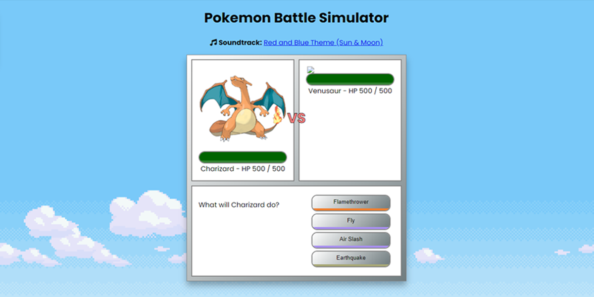

Simpele Pokemon Battle
Voor Inleiding Programmeren ging we voor de eerste aan de slag met JavaScript. Hierin mocht je zelf een opdracht bepalen die je ging maken. Deze opdracht moest aan een aantal vaste punten voldoen om een voldoende te krijgen.
Ik heb gekozen voor het thema Pokemon. Ik game zelf graag en wou met de basis kennis JavaScript die ik heb iets van een kleine game maken. Dus ik heb besloten om een Pokemon Battle te simuleren doormiddel van vast waardes mee te geven.
Je krijgt altijd de zelfde battle. Je speelt met een vaste Pokemon met zijn moveset. Je neemt het op tegen een computer die willekeurig een move terug speelt en wie de anders levens naar beneden brengt naar nul wint de battle!